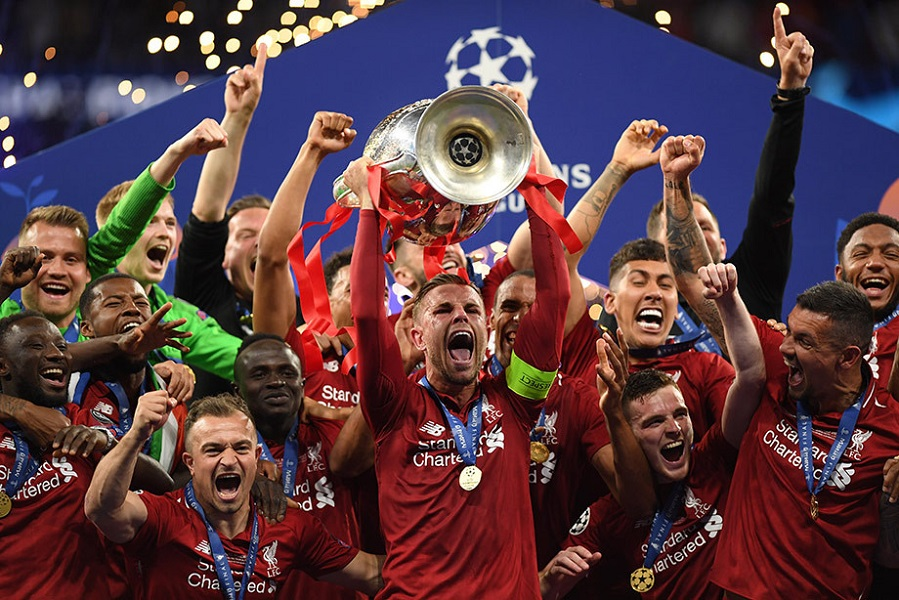
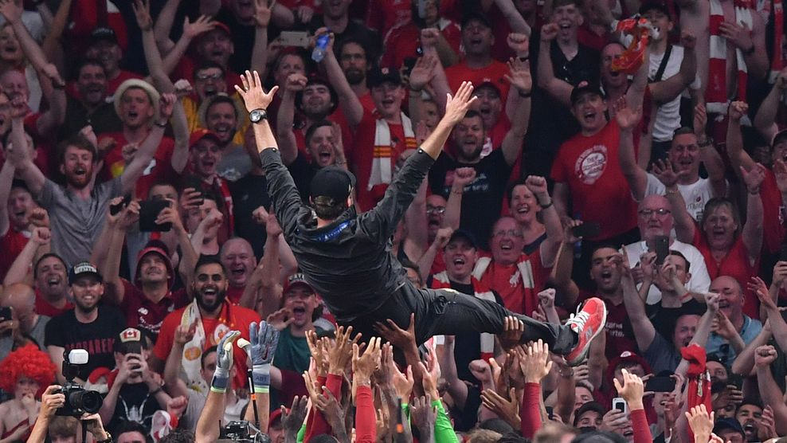
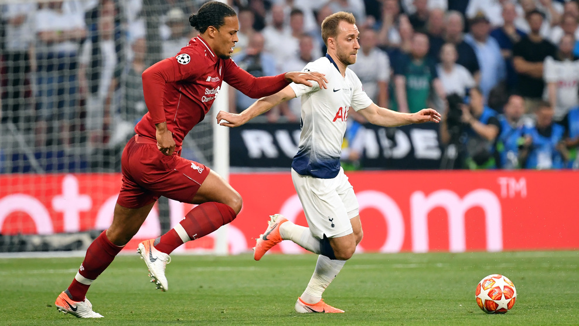
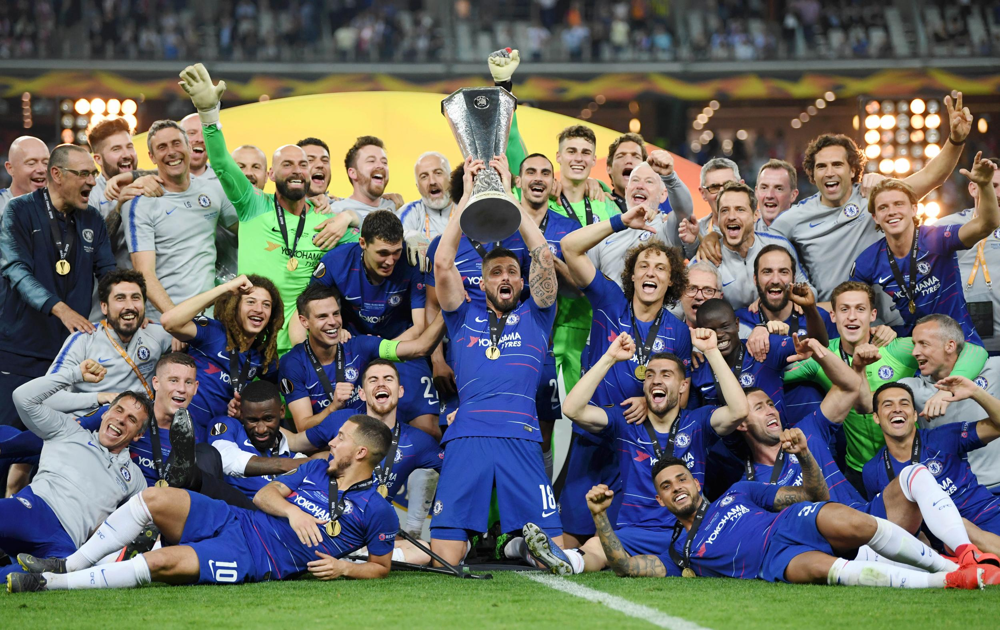
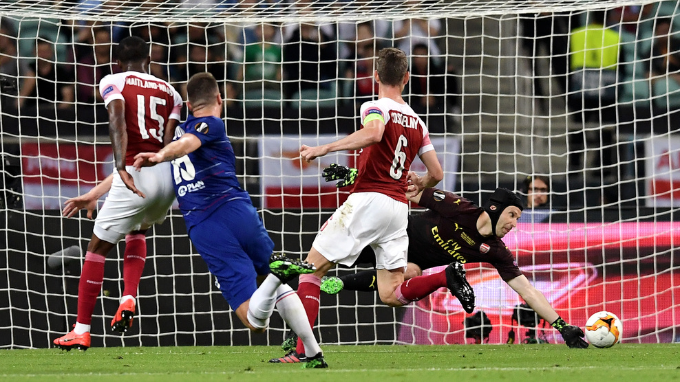
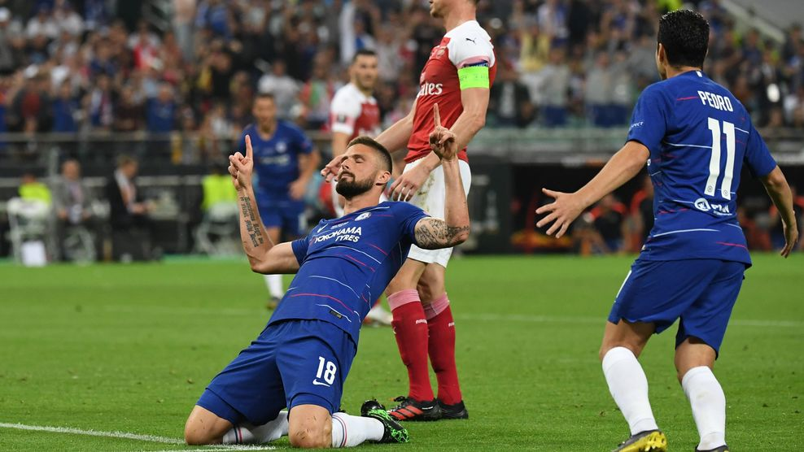

"Ліверпуль" переміг у фіналі Ліги чемпіонів
Матч був моментом істини і для Салаха, який в київському фіналі 2018 року залишив поле через травму вже в дебюті. У Мадриді він холоднокровно реалізував пенальті, призначений вже на 24-й секунді за гру рукою Муси Сіссоко.
Швидким голом Салаха справа не обмежилася. "Ліверпуль", хоч і віддав м'яч, шукав щастя в атаці. Небезпечними залпами видали запам'яталися Трент Александер-Арнолд і Енді Робертсон. У "Тоттенхема" двічі в відрив тікав Сон Хин Мін, але в цілому напад "шпор" нічого серйозного в першому таймі не показало.Напір "Тоттенхема" став куди більш усвідомленим після перерви. Справі Аллі пробив головою вище воріт, а з найгострішими ударами Сона і Лукаса Моур впорався Аліссон. У червоних до голу був близький вийшов на заміну Джеймс Мілнер. Без другого м'яча "Ліверпуль" вечір не закінчив. Ориги поставив крапку потужним ударом низом на 87-й хвилині.


